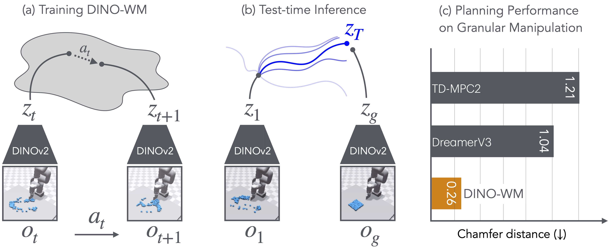
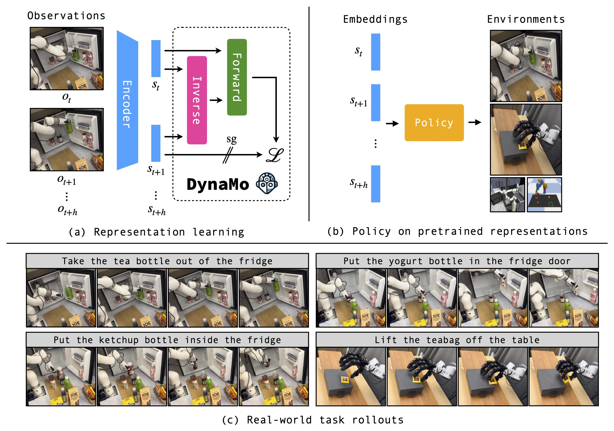

|
Hengkai (Gary) Pan I’m a first-year MSR student at CMU RI, advised by Prof. Deepak Pathak. Previously, I spent four amazing years at NYU, where I worked with Jeff Cui and Gaoyue Zhou under the supervision of Prof. Lerrel Pinto. I work on robotics and computer vision related topics, with a current focus on world models, imitation from observations and curiosity driven robotic explorations. |
{kind=link}
PublicationsMy goal is to build robots that can explore the world and learn on their own with minimal human supervision. I’m also interested in teaching robots to learn directly from online human videos and using knowledge from pre-trained models to plan tasks without extra training. |
|

|
DINO-WM: World Models on Pre-trained Visual Features enable Zero-shot Planning
Gaoyue Zhou, Hengkai Pan, Yann LeCun, Lerrel Pinto, Under Review project page / arXiv / code |
|

|
DynaMo: In-Domain Dynamics Pretraining for Visuo-Motor Control
Zichen Jeff Cui, Hengkai Pan, Aadhithya Iyer, Siddhant Haldar, Lerrel Pinto, NeurIPS, 2024 project page / arXiv / code |

|
BURExtract-Llama: An LLM for Clinical Concept Extraction in Breast Ultrasound Reports
Yuxuan Chen, Haoyan Yang, Hengkai Pan Fardeen Siddiqui, Antonio Verdone, Qingyang Zhang, Sumit Chopra, Chen Zhao, Yiqiu Shen, ACM Multimedia Computing for Health and Medicine, 2024 arXiv |
|
Template From Jon Barron. |